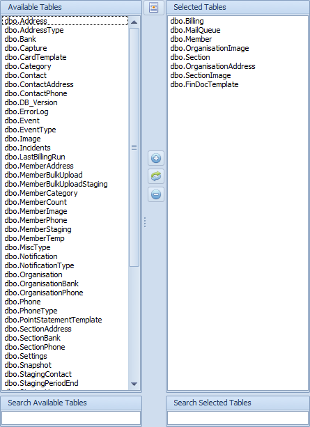

Selection Control Overview
The Selection Control is an advanced way of selecting multiple items at once.
You can find this control on multiple screens e.g.:
- Client Groups
- Adding tables for data sync
- Adding tables to data sync configs
The Selection Control has the following components:

- 1. Available Items List - These are items that are not selected but are available to be selected. Double clicking on any items here will move the item from the Available Items List to the Selected Items List
- 2. Selected Items List - These are the items that are current selected. Double clicking on any of the items in this list will move the item from the Selected Items List to the Available Items List
- 3. Filter boxes - the textboxes below each list will filter the list above. If you press Enter while you are filtering results the filtered results will move to the other list.
- 4. Add Button - the button with a Plus symbol will add the selected items in the Available Items List to the Selected Items List, however if no items are selected in the Available Items List ALL items will be moved to the Selected Items List
- 5. Remove Button - the button with a Minus symbol works exactly the same way as the Add Button except that it will move items from the Selected Items List to the Available Items List
- 6. Swap Button - the button that looks like a refresh button will reverse all the entries in the two lists
- 7. Switch to text mode button - this button changes the two lists to text mode entry. This is useful when copying the items that you want selected from an external source e.g. an email. Clicking on the button again will switch it back to list mode
- 8. Export/Import List - You can save your list of selected items for future use.